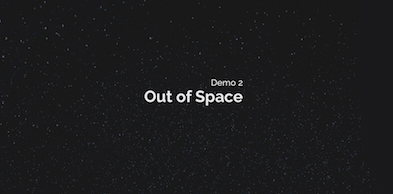

<!DOCTYPE html><html><head><head><meta charset="utf-8"/><title>Space.js – HTML-driven narrative 3D-scrolling</title><script src="jquery-2.0.2.min.js"></script><link rel="stylesheet" type="text/css" href="css/main.css"/><link rel="stylesheet" type="text/css" href="css/demo.css"/><script>(function(i,s,o,g,r,a,m){i['GoogleAnalyticsObject']=r;i[r]=i[r]||function(){
(i[r].q=i[r].q||[]).push(arguments)},i[r].l=1*new Date();a=s.createElement(o),
m=s.getElementsByTagName(o)[0];a.async=1;a.src=g;m.parentNode.insertBefore(a,m)
})(window,document,'script','//www.google-analytics.com/analytics.js','ga');

ga('create', 'UA-38987463-4', 'auto');
ga('send', 'pageview');
</script></head></head></html><body><section style="height:100px; bottom: 20px; left: 20px; z-index:100;" class="absolute narrow mt-large"><div style="text-align:right;" class="third"><div style="background-image:url(img/astro_small.jpg);" class="portrait-frame inline"></div></div><div class="two-third"><div style="font-size:8px;" class="mt">Author.</div><div style="margin-bottom:5px;" class="nm small">Patrik Goethe</div><div><a href="https://twitter.com/gopatrik" data-show-count="true" class="twitter-follow-button"></a></div><div style="font-size:8px;" class="nm">PS. Not real astronaut.</div></div></section><div class="space-frame"><section class="space-inner-frame"><section class="center"></section><p class="center nm">HTML-driven narrative 3D-scrolling</p><p class="small center subtle">(No js required)</p><h3 class="center small"><a href="demo1.html">Try the demos</a></h3><div class="center"><a href="demo1.html"></a><a href="demo2.html" style="margin-left: 20px;"></a></div><p class="center small">View on <a href="https://github.com/gopatrik/space.js" class="bold modal">GitHub </a>or read <a href="/articles/space.js/" class="bold modal">the Article</a><p class="center"><a href="https://twitter.com/share" class="twitter-share-button" data-text="Space.js – HTML-driven narrative 3D-scrolling." data-via="gopatrik" data-size="large">Tweet</a> <script>!function(d,s,id){var js,fjs=d.getElementsByTagName(s)[0],p=/^http:/.test(d.location)?'http':'https';if(!d.getElementById(id)){js=d.createElement(s);js.id=id;js.src=p+'://platform.twitter.com/widgets.js';fjs.parentNode.insertBefore(js,fjs);}}(document, 'script', 'twitter-wjs');</script>
<a class="github-button" href="https://github.com/gopatrik/space.js" data-style="mega" data-count-href="/gopatrik/space.js/stargazers" data-count-api="/repos/gopatrik/space.js#stargazers_count" data-count-aria-label="# stargazers on GitHub" aria-label="Star gopatrik/space.js on GitHub">Star</a></p></p></section></div><div class="space-frame"><section class="space-inner-frame"><h2>Creating a frame</h2>

<pre><code>&lt;div class=&quot;space-frame&quot;&gt;[contents]&lt;/div&gt;</code></pre></section></div><div class="space-frame"><section class="space-inner-frame"><p><strong>Recommended:</strong> Use <code>inner-frame</code> inside the <code>space-frame</code>. This makes things centered both vertically and horizontally inside the frame.</p>

<pre><code>&lt;div class=&quot;space-frame&quot;&gt;
	&lt;section class=&quot;space-inner-frame&quot;&gt;
		[contents]
	&lt;/section&gt;
&lt;/div&gt;</code></pre></section></div><div class="space-frame" data-duration="2"><section class="space-inner-frame"><h2>Custom duration</h2>

<p>If we want we can provide a custom duration for our frames with the data-duration attribute, which multiplies the default duration of the transition.</p>

<pre><code>&lt;section class=&quot;space-frame&quot; data-duration=&quot;2&quot;&gt;...&lt;/section&gt;
&lt;section class=&quot;space-frame&quot; data-duration=&quot;0.6&quot;&gt;...&lt;/section&gt;</code></pre></section></div><div class="space-frame" data-enter="fadeIn" data-exit="rotate360"><section class="space-inner-frame"><h2>Custom transition</h2>

<p>Space.js has a default default transition - which is to enter by fading in and exit by scaling up and fading out. <strong>We can provide a custom transition override it</strong>, (from predefined transitions).</p>

<pre><code>&lt;section class=&quot;space-frame&quot; data-transition=&quot;rotate360&quot;&gt;...&lt;/section&gt;</code></pre></section></div><div class="space-frame" data-transition="fadeOut slideInLeft"><section class="space-inner-frame"><h2>Multiple values are supported!</h2>

<pre><code>data-transition=&quot;fadeOut slideInLeft&quot;</code></pre></section></div><div class="space-frame" data-enter="fadeIn" data-exit="fadeOut zoomOut"><section class="space-inner-frame"><h3>Custom entry and exit</h3>

<p>We can also provide specific <strong>enter</strong> and <strong>exit</strong> transitions.</p>

<pre><code>&lt;section class=&quot;space-frame&quot; data-enter=&quot;fadeIn&quot; data-exit=&quot;fadeOut zoomOut&quot;&gt;...&lt;/section&gt;</code></pre></section></div><div class="space-frame" data-duration="1.3" data-enter="fadeIn" data-exit="zoomOut fadeOut"><section class="space-inner-frame"><h2>What a complete frame could look like</h2>

<pre><code>&lt;div class=&quot;space-frame&quot; data-enter=&quot;fadeIn&quot; data-exit=&quot;zoomOut fadeOut&quot; data-duration=&quot;1.3&quot;&gt;
	&lt;section class=&quot;space-inner-frame&quot;&gt;
		&lt;div style=&quot;background-image:url(img/splash.png); padding:150px 200px;&quot; class=&quot;bg&quot;&gt;
			&lt;section&gt;
				&lt;p&gt;Demo 1&lt;/p&gt;
				&lt;h1&gt;The Gallery&lt;/h1&gt;
			&lt;/section&gt;
		&lt;/div&gt;
	&lt;/section&gt;
&lt;/div&gt;</code></pre></section></div><div class="space-frame" data-enter="scaleIn" data-exit="slideOutDown"><section class="space-inner-frame"><h2>Custom transitions</h2>

<p>You can also specify your own transitions with the <code>addTransitions</code> method.</p>

<pre><code>&lt;script src=&quot;space.js&quot;&gt;&lt;/script&gt;

&lt;script type=&quot;text/javascript&quot;&gt;
	var transitions = {
		rotate720: {
			&#39;rotate&#39;: {from:0, to:720}
		},
		fadeOutHalf: {
			&#39;opacity&#39;: {from:1, to:0.5}
		}
	};
	Space.addTransitions(transitions);
&lt;/script&gt;</code></pre></section></div><div class="space-frame" data-enter="fadeIn" data-exit="fadeOut" data-duration="4"><section class="space-inner-frame"><section class="center"></section><p class="center nm">HTML-driven narrative 3D-scrolling</p><p class="small center subtle">(No js required)</p><h3 class="center small"><a href="demo1.html">Try the demos</a></h3><div class="center"><a href="demo1.html"></a><a href="demo2.html" style="margin-left: 20px;"></a></div><p class="center small">View on <a href="https://github.com/gopatrik/space.js" class="bold modal">GitHub </a>or read <a href="/articles/space.js/" class="bold modal">the Article</a><p class="center"><a href="https://twitter.com/share" class="twitter-share-button" data-text="Space.js – HTML-driven narrative 3D-scrolling." data-via="gopatrik" data-size="large">Tweet</a> <script>!function(d,s,id){var js,fjs=d.getElementsByTagName(s)[0],p=/^http:/.test(d.location)?'http':'https';if(!d.getElementById(id)){js=d.createElement(s);js.id=id;js.src=p+'://platform.twitter.com/widgets.js';fjs.parentNode.insertBefore(js,fjs);}}(document, 'script', 'twitter-wjs');</script>
<a class="github-button" href="https://github.com/gopatrik/space.js" data-style="mega" data-count-href="/gopatrik/space.js/stargazers" data-count-api="/repos/gopatrik/space.js#stargazers_count" data-count-aria-label="# stargazers on GitHub" aria-label="Star gopatrik/space.js on GitHub">Star</a></p></p><section style="height:100px; bottom: 20px; left: 20px;" class="narrow mt-large"><div style="text-align:right;" class="third"><div style="background-image:url(img/astro_small.jpg);" class="portrait-frame inline"></div></div><div class="two-third"><div style="font-size:8px;" class="mt">Author.</div><div style="margin-bottom:5px;" class="nm small">Patrik Goethe</div><div><a href="https://twitter.com/gopatrik" data-show-count="true" class="twitter-follow-button"></a></div><div style="font-size:8px;" class="nm">PS. Not real astronaut.</div></div></section></section></div><div class="space-frame"><section class="space-inner-frame"></section></div><script src="space.js"></script><script>!function(d,s,id){var js,fjs=d.getElementsByTagName(s)[0],p=/^http:/.test(d.location)?'http':'https';if(!d.getElementById(id)){js=d.createElement(s);js.id=id;js.src=p+'://platform.twitter.com/widgets.js';fjs.parentNode.insertBefore(js,fjs);}}(document, 'script', 'twitter-wjs');</script>
<script async defer id="github-bjs" src="https://buttons.github.io/buttons.js"></script></body>